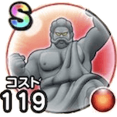

うごくせきぞう
11章5話〜12章4話こころ最大コスト+4スキルの斬撃・体技ダメージ+7%メラ属性斬撃・体技ダメージ+7%バギ属性耐性+7%石化耐性+7% / 7.5点
くわしい特徴
【ランク特殊効果】 こころ最大コスト+4スキルの斬撃・体技ダメージ+7%メラ属性斬撃・体技ダメージ+10%じゅもん耐性+3%バギ属性耐性+7%石化耐性+20%ターン開始時HPを15回復するこころ最大コスト+4スキルの斬撃・体技ダメージ+7%メラ属性斬撃・体技ダメージ+7%バギ属性耐性+7%石化耐性+7%